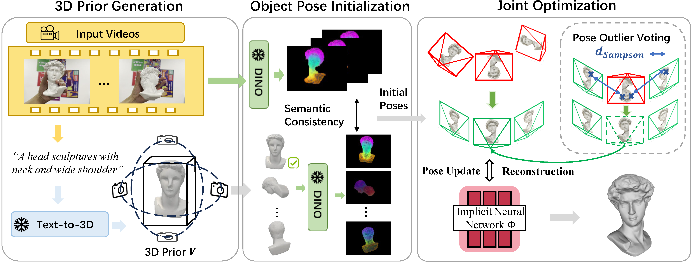

This work aims to reconstruct the 3D geometry of a rigid object manipulated by one or both hands using monocular RGB video. Previous methods rely on Structure-from-Motion or hand priors to estimate relative motion between the object and camera, which typically assume textured objects or single-hand interactions. To accurately recover object geometry in dynamic interactions, we incorporate priors from 3D generation model into object pose estimation and propose semantic consistency constraints to solve the challenge of shape and texture discrepancy between the generated priors and observations. The poses are initialized, followed by joint optimization of the object poses and implicit neural representation. During optimization, a novel pose outlier voting strategy with inter-view consistency is proposed to correct large pose errors. Experiments on three datasets demonstrate that our method significantly outperforms the state-of-the-art in reconstruction quality for both single- and two-hand scenarios.

Overview of our framework. We first prompt ChatGPT to describe the hand-held object and generate a 3D textured mesh based on this textual description. Despite appearance discrepancies, we leverage semantic consistency to initialize the object pose by aligning the generated prior with the input images in the DINO feature space. We then use the coarse poses to learn an implicit object representation while simultaneously refining the poses. Finally, we introduce a pose outlier voting strategy to correct significantly erroneous poses.
@inproceedings{jiang2025hand,
title={Hand-held Object Reconstruction from RGB Video with Dynamic Interaction},
author={Jiang, Shijian and Ye, Qi and Xie, Rengan and Huo, Yuchi and Chen, Jiming},
booktitle={Proceedings of the Computer Vision and Pattern Recognition Conference},
pages={12220--12230},
year={2025}
}